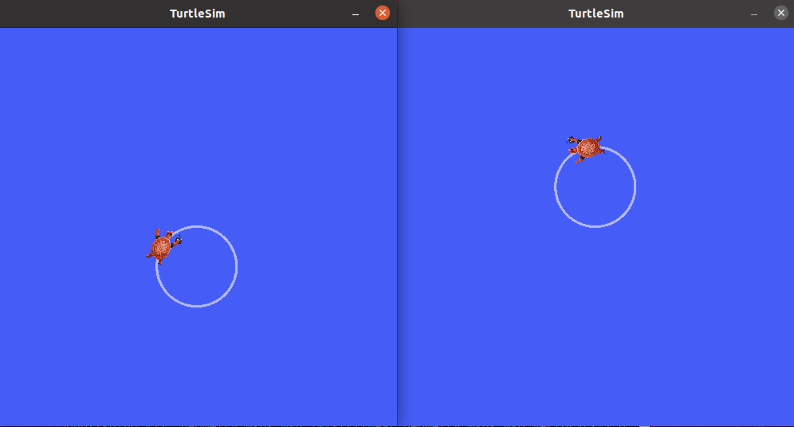

启动节点
目标: 使用命令行工具一次启动多个节点。
时间： 5分钟
背景
在大多数入门教程中，您每次运行新节点都需要打开新的终端。随着您创建更复杂的系统，并同时运行越来越多的节点，打开终端并重新输入配置详细信息变得繁琐。
启动文件允许您同时启动和配置包含 ROS 2 节点的多个可执行文件。
使用``ros2 launch``命令运行单个启动文件将一次性启动整个系统 - 所有节点及其配置。
先决条件
在开始这些教程之前，请按照 ROS 2 安装 页面上的说明安装 ROS 2。
本教程中使用的命令假设您按照操作系统的二进制包安装指南进行操作（Linux的Debian包）。如果您从源代码构建，仍然可以按照本教程进行操作，但是您的设置文件路径可能会不同。如果您从源代码安装，您还将无法使用“sudo apt install ros-<distro>-<package>”命令（在初学者级别教程中经常使用）。
如果你正在使用 Linux，并且对 shell 不熟悉，这个教程 会有所帮助。
任务
运行 Launch 文件
打开一个新的终端并运行：
ros2 launch turtlesim multisim.launch.py
以下命令将运行下面的 Launch 文件：
# turtlesim/launch/multisim.launch.py
from launch import LaunchDescription
import launch_ros.actions
def generate_launch_description():
return LaunchDescription([
launch_ros.actions.Node(
namespace= "turtlesim1", package='turtlesim', executable='turtlesim_node', output='screen'),
launch_ros.actions.Node(
namespace= "turtlesim2", package='turtlesim', executable='turtlesim_node', output='screen'),
])
注解
上面的启动文件是用Python编写的，但你也可以使用XML和YAML来创建启动文件。你可以在 使用 Python、XML 和 YAML 编写 ROS 2 启动文件 中查看这些不同的ROS 2启动文件格式的比较。
这将运行两个turtlesim节点：

暂时不用担心启动文件的内容。你可以在 ROS 2启动教程 中找到更多关于ROS 2启动的信息。
(可选) 控制Turtlesim节点
现在这些节点正在运行，您可以像其他ROS 2节点一样对它们进行控制。例如，您可以通过打开两个额外的终端并运行以下命令使乌龟朝相反的方向行驶：
在第二个终端中：
ros2 topic pub /turtlesim1/turtle1/cmd_vel geometry_msgs/msg/Twist "{linear: {x: 2.0, y: 0.0, z: 0.0}, angular: {x: 0.0, y: 0.0, z: 1.8}}"
在第三个终端中：
ros2 topic pub /turtlesim2/turtle1/cmd_vel geometry_msgs/msg/Twist "{linear: {x: 2.0, y: 0.0, z: 0.0}, angular: {x: 0.0, y: 0.0, z: -1.8}}"
运行这些命令后，您应该会看到类似以下内容的输出：
总结
迄今为止，您所做的事情的重要性在于您使用一个命令运行了两个turtlesim节点。一旦您学会编写自己的launch文件，您就能够以类似的方式使用``ros2 launch``命令运行多个节点，并设置它们的配置。
有关ROS 2 launch文件的更多教程，请参阅：主要的launch文件教程页面。